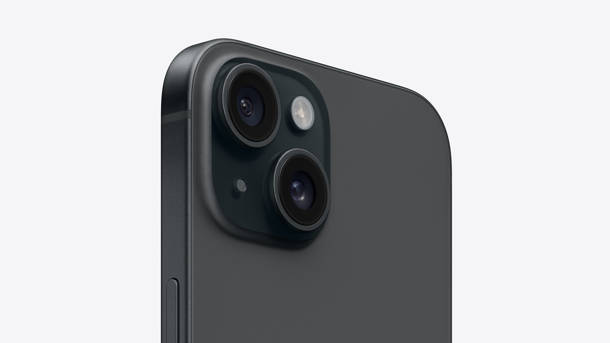

Welcome to TechBeamReviews, where we bring you beaming tech-related reviews and serve as your go-to guide for anything tech. Currently, we provide reviews on the following categories, but we are always looking to expand our offerings as we grow and our audience grows. As such, if you have any suggestions for what we should review, please visit the Contact Us page to let us know!
| Phones | Video Games |
|---|---|
|

One of the reviews we recently covered on our website was the new base model, iPhone 15. For our testing, we had a black 128GB variant, but the base model iPhone can bumped up to 256GB or 512GB, and there are various colours to choose from, such as Green, Yellow, Pink, and Blue. To learn more about the iPhone 15 and whether it's the phone for you, you can visit the Phone section by clicking on the button below to be directed to the full review! |
One of the video games we reviewed recently on our website was Fortnite Battle Royale to see just how well the worldwide sensation is holding up. With the initial launch of the Fortnite Battle Royale platform in 2017, the game has evolved over the years. Some say it's for the better, but some say Fortnite has lost its initial purpose and feel that made it a worldwide sensation. Join us as we explore the idea in our full review of Fortnite Battle Royale by clicking the button below to be directed to the full review. |
| Phones | Video Games |
At TechBeamReviews, we take a different approach than most reviewers. We emphasise the product experience over specs and numbers. While we do discuss the specifications, we aim to keep it simple so that just about anyone can read our review and gain valuable insights. To see the exact process for our reviews, you can check out our scorecards below!
| Criteria | Rating | Additional Comments |
|---|---|---|
| Design | 4.5 | Like other rivals in the same price range, the design is cutting-edge and elegantly styled. However, there are no design elements to set it apart from others. |
| Ease of Use | 4 | The software is well-designed and relatively easy to use compared to its peers. However, the hardware side could require time to get used to since the volume buttons and the power button are on the same side rather than separate sides. |
| Display | 5 | The display is vibrant and bright, with a flat display and excellent screen-to-body ratio. |
| Performance | 4.5 | The phone feels snappy and smooth in nearly every application, whether that be intensive or day-to-day tasks. Overall, the phone has excellent performance and outperforms most of its peers. |
| Battery Life | 3.5 | The battery life is the biggest weakness, lasting only ¾ of the day with some heavy usage before dying and needing to be charged again. However, it does have decent fast charging that allows the phone to reach 50% within 30 minutes. |
| Camera Quality | 3.5 | The camera is on par with its peers in terms of hardware, but where it follows short compared to its peers is on the software side. Sometimes images and videos look great, but other times not so much, as such consistency is the weakness of the cameras. |
| Total Score | 25/30 | Overall, it's a great phone for anyone willing to compromise on battery life and camera quality for a great design, display, and performance. |
| Criteria | Rating | Additional Comments |
|---|---|---|
| Graphics | 4.5 | The graphics are unique. Unlike most games, the game has comic book-like graphics, while most other games try to have graphics that are as close to reality as possible. |
| Gameplay | 4 | The gameplay is quite challenging even on the normal difficulty. However, it perfectly archives a balance between challenging and playable. |
| Storyline | 5 | One of the main selling points of the game is its storyline. The action-packed storyline pulls you in and keeps you hooked till the end with various emotional and hype moments. |
| Controls | 3.5 | Although the controls are simple and predictable, they still allow the user to feel in control. |
| Replay Value | 4 | The game has various side missions to supplement the replay value of the game, but even then, the main storyline is enough reason to consider playing the game again. |
| Sound/Music | 4.5 | The game had excellent sound effects for the various action-packed scenes, and the music took it even further to make you feel every emotion. |
| Total Score | 25.5/30 | It's an excellent game for someone looking for a storyline-heavy game with great graphics, gameplay, and easy controls. |
| Bob M | John J | Leah K |
|---|---|---|
| Reliable | Unbiased | Easy-To-Understand |
| “I have been a fan of the TechBeamReview website and team for a while now, and every time I need to learn more about a product, I come to TechBeamReviews because I know I can rely on the reviews of TechBeamReviews.” | “I feel like most other reviews are inaccurate due to sponsorships and bias, but I believe TechBeamReviews provides the people with unbiased opinions and speaks the truth.” | “I am not a big tech person and rarely buy tech at all, but whenever I do, I know exactly where to go to find the information I need, and that is TechBeamReviews. I think it is the fact that their reviews are easy to understand that keeps bringing me back.” |